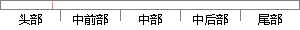

首先建立了两路信号的数学模型，计算了时差频差估计的理论下限，然后介绍了两种参数估计的方法：一种主要采用二维联合搜索，然后利用二次曲面拟合的方法进行细化，得到参数的精估值；
片段位置图

相似结果|
1
原句片段：首先建立了两路信号的数学模型，计算了时差频差估计的理论下限，然后介绍了两种参数估计
相似片段 1：第二章首先建立了带有时差频差的两路窄带信号的数学模型,计算了时差频 差参数估计的理论下限,然后利用时差与频差分维估计的思想,对已有估计算法 做出了改进,给出...
相似片段 2：第二章首先建立了带有时差频差的两路窄带信号的数学模型,计算了时差频差参数估计的理论下限,然后利用时差与频差分维估计的思想,对已有估计算法做出了...
相似片段 3：第二章首先建立了带有时差频差的两路窄带信号的数学模型,计算了时差频差参数估计的理论下限,然后利用时差与频差分维估计的思想,对已有估计算法做出了改进,给出了...
|
※ 片段修改建议 ※
近似词参考：- 首先：起首
- 建立：成立 创立 创设 建树 确立 设立建设 竖立 创建 树立
- 信号：旌旗灯号
- 计算：计较 较量争论 盘算
- 估计：估量 预计
- 介绍：先容
- 方法：方式 要领 法子
- 主要：首要 重要
- 采用：采取 接纳 采纳
- 联合：结合 团结
- 搜索：搜刮 搜寻
- 利用：操纵 哄骗 使用 行使 应用
- 方法：方式 要领 法子
- 进行：举行
- 得到：获得
系统自动生成语句：起首成立了两路旌旗灯号的数学模型，计较了时差频差估量的理论下限，然后先容了两种参数估量的方式：一种首要采取二维结合搜刮，然后操纵二次曲面拟合的方式举行细化，获得参数的精估值；
注：本片段修改建议为系统自动生成，仅供参考。